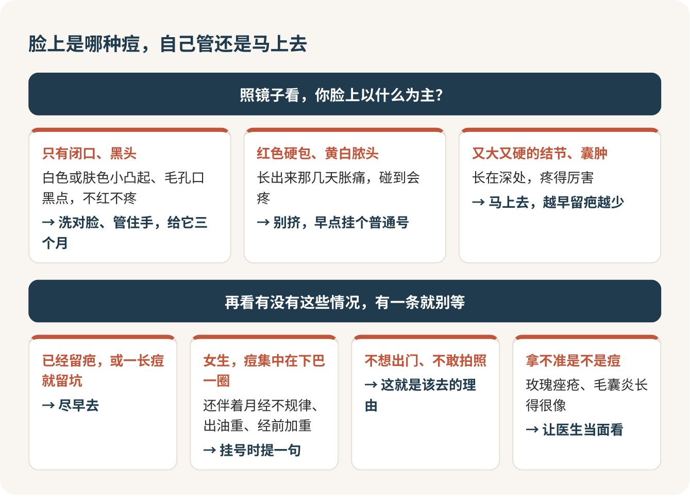

痘痘：三个月不见好，就去皮肤科
长痘这件事，我的态度很明确：先把脸洗对、管住手，给它三个月；三个月还不见好，别再试第五瓶网红祛痘水，直接挂皮肤科。别自己挤，别让美容院拍张照片就给你配疗程，别跟着室友乱刷酸。痘是病，治病找医生，在北京挂一个普通号，医保报完自己掏的钱还不够买半瓶精华。
闭口、黑头、红包，其实是一回事
额头那片摸着粗粗的小颗粒、鼻翼上的黑点、下巴上一碰就疼的红包，宿舍里分别叫“闭口”“黑头”“痘痘”，听着像三种毛病。它们其实是同一种病，医生管它叫痤疮。
毛孔就像宿舍楼下的下水道。油脂、死皮和细菌把它堵住，井盖盖着，你看到的是白色或肤色的小凸起，这就是闭口；井盖掀开了，堵在口上的那一截露在外面，氧化变黑，就是黑头；堵久了里面发炎，就成了红包、脓包。所以黑头根本搓不掉，洗得再勤也冲不开，磨砂膏和撕拉鼻贴越用越糟。
还有一句话想先说在前面：长痘不丢人。青春期前后几乎人人都长过，你在镜子里盯着的那几颗，别人多半根本没注意。
照照镜子，先认是哪一种
用指腹从额头摸到下巴，大致能分出三种情况。只有闭口和黑头，不红不疼，这是最轻的；冒出红色发硬的小包，或者顶上带黄白脓头，长出来那几天胀痛，这是中间那一档；长在深处、又大又硬、疼得厉害的结节和囊肿，这是最重的。

这张图只用来决定去不去医院、去得多急，别拿它给自己开药。脸上的红点小包也不全是痤疮，玫瑰痤疮、毛囊炎长得都有点像，处理方法完全不同，照镜子分不出来，只能让医生当面看。
这几种情况，别等三个月
“三个月”是给最轻那种留的耐心。下面几种，我劝你现在就去：
长了又大又硬又疼的结节、囊肿。这种痘最容易留下凹坑，越早治，留下的疤越少。
已经留疤了，或者你以前一长痘就爱留印留坑。这时候拖一天就多一分代价。
女生的痘集中在下巴和下颌一圈，同时月经不规律、毛发偏多、出油特别厉害，或者每次经前明显加重。这可能跟激素有关，挂号时一定提一句。
痘让你不想出门、不敢拍照、不想见人。我不觉得为这个看医生是小题大做，脸的事影响到心情了，就是该处理的时候。
管住手：挤痘是最亏的买卖
挤的那一下很解压，我懂。但这是整件事里最亏的买卖：手一挤，很容易把里面的东西推得更深，第二天更红更肿，好得更慢，手上的细菌还可能让它感染，最后留下一个本来不会有的印或者坑。
手实在忍不住，就把指甲剪短，晚上看书时别托着下巴。真有一颗特别大、特别疼、怎么都不消的，去皮肤科，医生可以在那一颗上打一针，两三天就平下去，比你自己对着镜子折腾一晚上强得多。
网红祛痘水和美容院疗程，先别买
祛痘这件事，最容易让人乱花钱。我给三样东西贴个标签：
“药妆”“医学级”祛痘霜，当广告词读。护肤品不能治病，宣称能治的，先打个问号。护肤这部分怎么做，看护肤那一篇。
跟着室友刷酸，别碰。酸本身不是坏东西，但你不知道自己是哪一种痘，也不知道它和医生以后给你开的药叠在一起会不会把脸烧红。
美容院、医美店看一张照片就给你配“祛痘疗程”，别付钱。照片分不清痤疮和毛囊炎，更看不出你用过什么药、对什么过敏。光电、果酸换肤这些项目，说到底是医疗操作，正规机构做之前要书面告诉你适应症、风险和注意事项，还得你签字。被推销的时候，说这一句就够了：
我想先去医院确诊。这个项目一共几次、总价多少、有什么风险，能先写在纸上给我吗？
对方要是支支吾吾，或者催你“今天交定金最划算”，起身走就是了。
第一次去皮肤科，挂普通号就够
很多人拖着不去，是怕。怕医生觉得你为几颗痘来医院是小题大做，怕排两小时队进去三分钟就被打发，怕说不清楚。我想告诉你：皮肤科医生一上午要看几十张长痘的脸，你是诊室里最常见的病人，没人会觉得你矫情。
挂号别犹豫，挂普通号就够了，认清是哪一种、开个方案，普通号完全做得到。北京三级医院的普通号五十块，医保报完自己掏十块左右。外地生源的同学，先问一句学校医保办或校医院，你的医保能在哪些医院结算、要不要先开转诊单。算上排队和拿药，留出半天。
门诊时间短，进门现组织语言很容易漏。我的建议是在手机备忘录里写好几行，坐下直接念：长了多久，主要长在哪；现在是闭口多还是红包多，有没有很疼的硬块；用过什么药和护肤品，各用了多久，有没有效；女生写上月经规不规律、经前会不会加重；情绪怎么样；正在吃什么别的药。再在手机里存几张同一光线、同一角度的自拍，复诊时前后一比，比任何描述都清楚。
开场可以照着说：
我长痘大概一年了，下巴和额头最多，最近有几颗又大又疼。之前自己用过两个月水杨酸洗面奶，没什么效果。想请您看看我是哪一种，该怎么治。
拿到药以后，难的是坚持
治痘最难熬的，是开完药以后那几个月。有点像跑八百米，起跑谁都会，难的是第二圈腿发软时还按原来的节奏跑。
医生开的药大致分两路。外用的，常见的是阿达帕林这类维 A 酸凝胶、过氧化苯甲酰，还有抗生素凝胶；口服的，有抗生素、异维 A 酸，女生还可能用到调激素的药。具体用哪种、怎么用，一律听医生的，看说明书。
最容易让人放弃的是头几周。外用维 A 酸刚开始用，脸发红、发干、脱皮、有点烧，很常见，有的人头两三周还会短暂变差一点。这是预料之中的代价，多数人会慢慢适应。这段时间护肤只留温和洗面奶、保湿和防晒，别的全停。
最常见的两种错误，我都劝你别犯：一种是看脸红了就自己把药停了；另一种是嫌慢，又加一瓶网上买的酸。轻微的红、干、脱皮，照医嘱继续用，记下哪天开始的，复诊时告诉医生；红得厉害、烧得受不了，别硬扛，联系开药的医生。外用药至少给它一两个月再判断有没有用，别用三天就下结论。
医生开完药，趁还在诊室问清这一句：
这个药刚开始用会不会更红更干？出现什么情况我要停药，什么情况坚持用、回来复诊？
如果医生给你开异维 A 酸，有几件事必须当真：它要定期抽血查肝功能和血脂；女生吃药期间和停药后一段时间必须严格避孕，停多久能备孕要问清楚；吃药期间情绪明显低落，马上告诉医生。
痘消下去以后，别急着把药扔了。痤疮很容易反复，医生通常会让你用几个月的维持方案。好转那次复诊，问清维持期用什么、一周几次、什么时候能停。
痘印和痘坑，排在最后
痘还在一茬一茬地长，就去做祛坑项目，这钱多半白花。顺序是：先控痘，再管印，最后才谈坑。
痘好以后留下的平平的红印、褐色印，大多会随时间慢慢淡，急的话再找医生想办法。摸得到的凹坑不会自己长平，要靠激光这类治疗，这才是真正花钱的地方，一定要在痘控制住以后，找正规医院的医生评估。别把红印、褐印和坑混成一个“痘印”去买套餐。
我脸上这些平的红印和凹下去的坑，分别是什么？哪些会自己淡，哪些需要治疗？
今天开始好好洗脸、管住手，在手机日历上记一个三个月后的日子。到那天照镜子还是老样子，就把挂号这件事办了。